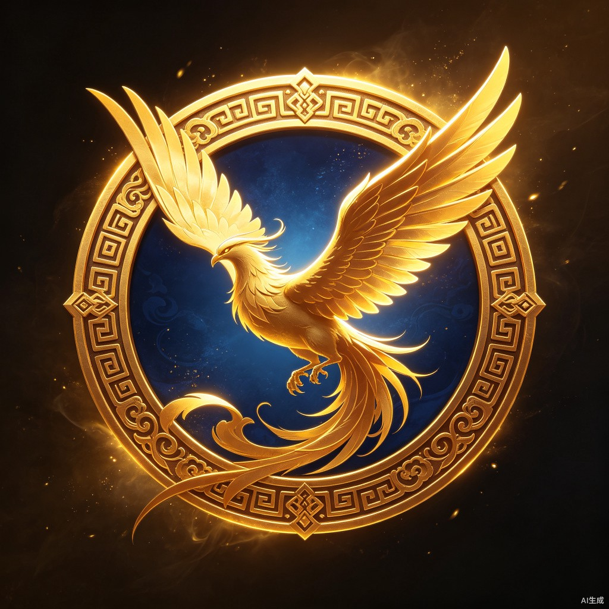
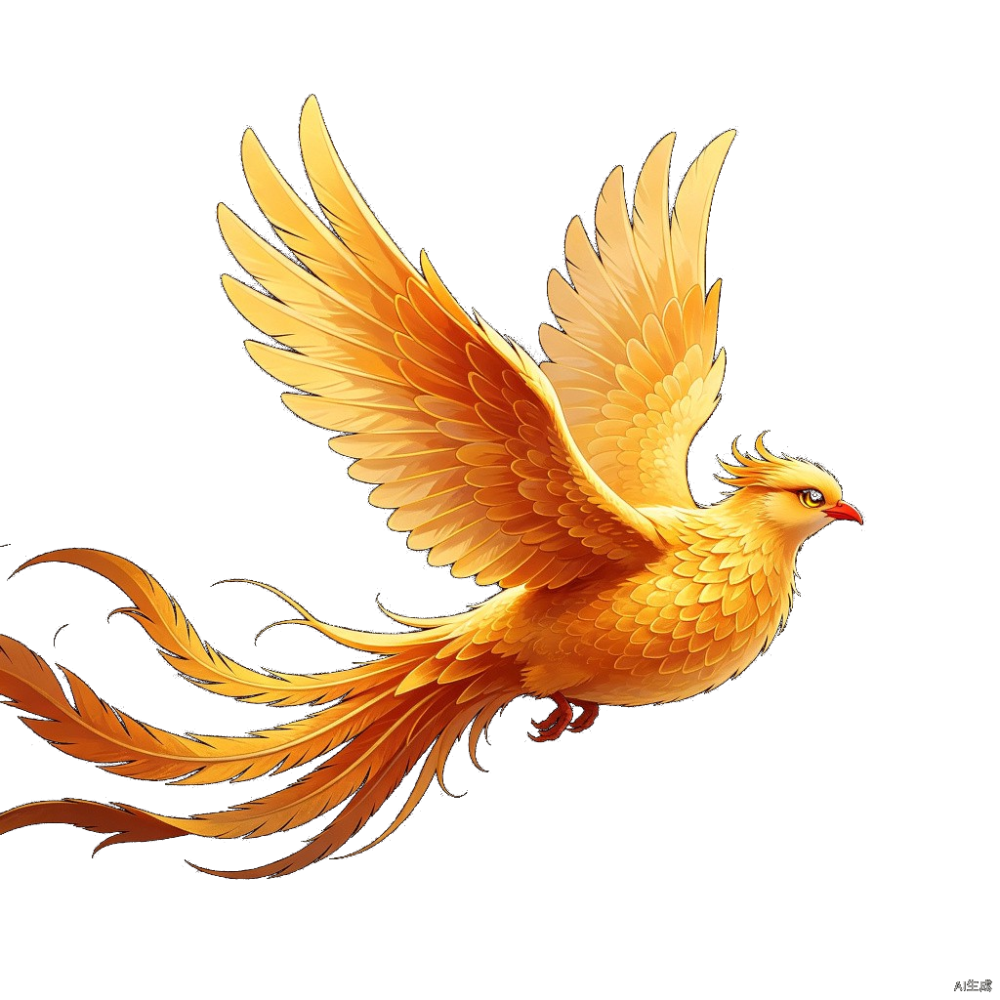
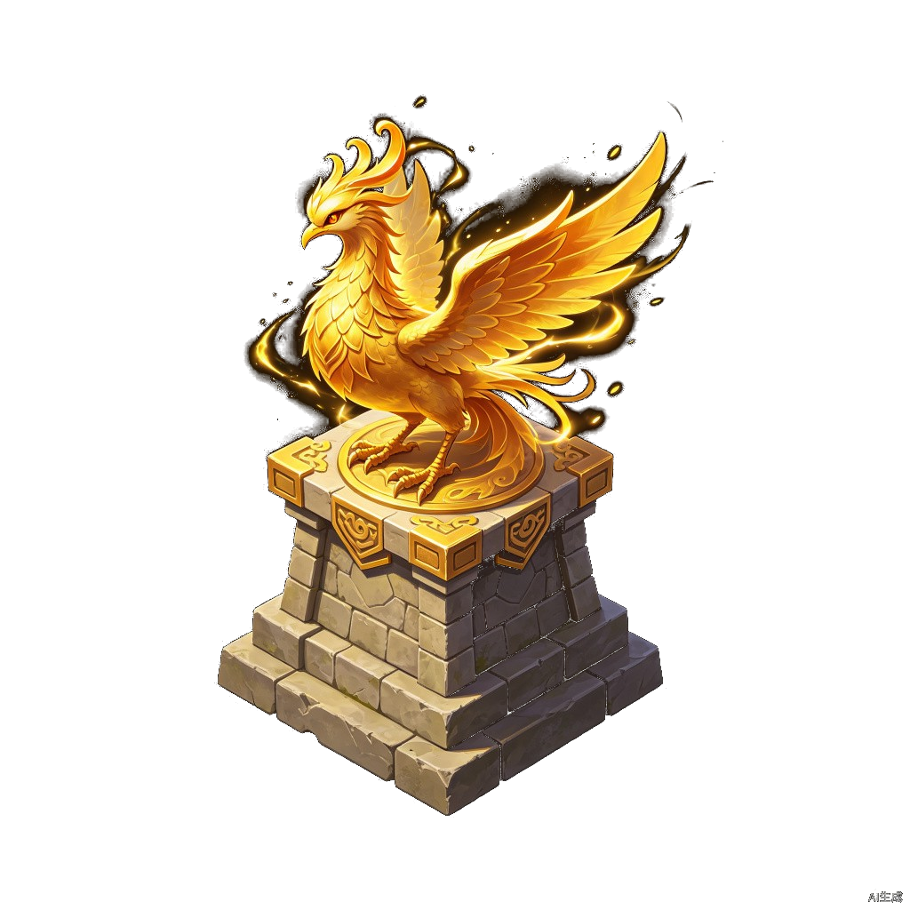

♫

炎黄少年
以神话之名，伴少年成长
开始旅程

我愿意
三道试炼
完成它们，感受坚韧的力量
拆石块
把大目标拆成小步骤
衔微木
勇敢迈出第一步
投填海
看到坚持的力量
开始试炼
第一道试炼：拆石块
点击石头，将它拆解成小步骤
第二道试炼：衔微木
点击发光点，引导精卫去衔取
第三道试炼：投填海
点击石堆，将石子投入大海
已投掷:
0
/ 10
点击石堆投掷石子
坚韧值
0 / 100
精卫之志
坚韧不拔
收藏徽章
继续
进入塔防战斗
我的精神图谱
回到开始
波次:
1
/3
分数:
0
生命:
5
能量:
100

精卫塔 (30能量)
取消放置
开始第1波
返回精神图谱